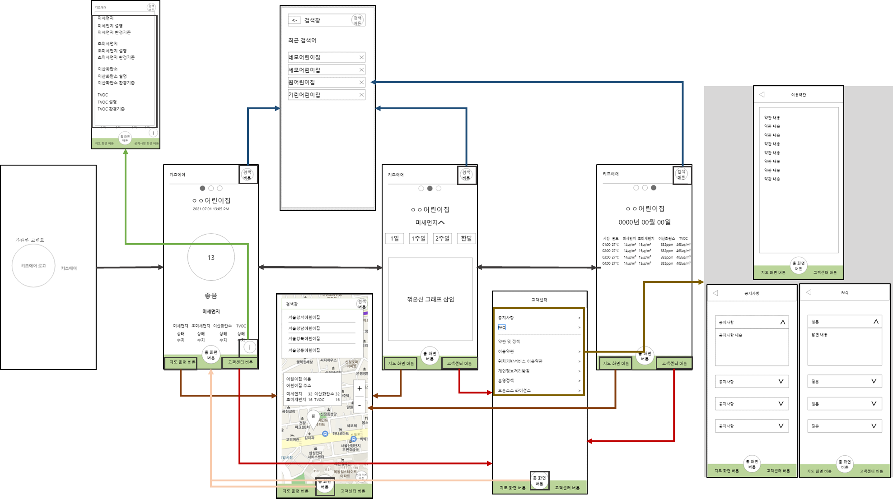
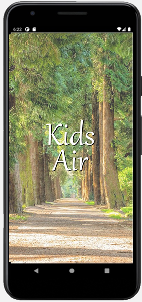
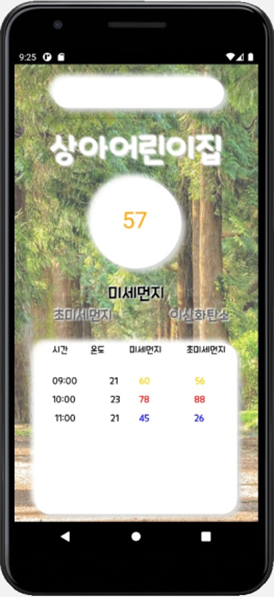
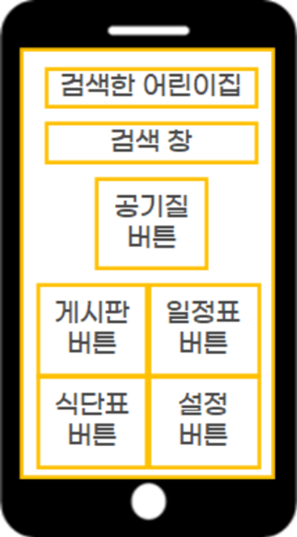
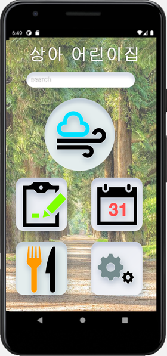

정부 공공데이터를 활용해 영유아 시설의 공기 상태를 실시간으로 보여주고, 직관적인 수치 정보를 통해 부모가 안심할 수 있는 환경을 설계했습니다.
어린이집 실내 공기질을 보호자가 확인할 수 있게 만든 앱으로, 대학 재학 중 기획·디자인해 안드로이드로 출시했습니다.
기존 미세먼지 앱이 실외 수치를 다루는 것과 달리 실내 측정값을 대상으로 했습니다.
정부 공공데이터를 받아 색상과 이모지로 상태를 표시하는 구조입니다.
실내 공기질 관리의 문제점을 분석했습니다.
환경 리스크
실외보다 실내 공기 오염이 영유아 건강에 더 큰 영향을 주는데도 불구하고, 어린이집의 실시간 데이터를 통합해서 보여주는 전문 서비스는 없었습니다.
사용자 니즈 파악
학부모들은 미세먼지가 심한 날, 자녀가 있는 공간의 환기 상태나 공기청정기 가동 여부를 직접 확인하고 싶어 하는 요구가 있었습니다.
강점과 기회를 바탕으로 전략을 수립했습니다.
공공데이터 API를 실시간으로 가공하여 스플래시, 메인 대시보드, 상세 조회, 개인 위젯 설정까지 이어지는 매끄러운 흐름을 기획했습니다.
사용자가 원하는 정보를 최소한의 터치로 찾을 수 있도록 최적화했습니다.
Kids Air 정보 설계 구조도
이미지를 클릭하면 확대됩니다

현재 위치나 자녀가 다니는 어린이집을 등록하여 주변 공기 상태를 한눈에 파악합니다.
앱을 직접 열지 않고도 스마트폰 배경화면에서 실시간 공기 상태를 바로 확인합니다.
어린이집 실내 환경을 투명하게 공개하여 학부모의 신뢰를 얻는 것이 핵심입니다.
누구나 쉽게 공기질의 상태를 판별할 수 있도록 직관적인 인터페이스를 설계했습니다.
복잡한 수치 대신 색상과 이모지를 적극적으로 활용하여, 사용자가 한눈에 현재 위험도를 인지할 수 있도록 돕습니다.
단순 현재 수치를 넘어, 시간대별 공기질 변화를 표로 제공하여 운영의 투명성과 신뢰도를 확보합니다.
가상 UI 체험
Hourly Reports
| 시간 | 온도 | 미세 | 초미세 |
|---|---|---|---|
| 09:00 | 21 | 12 | 8 |
| 10:00 | 22 | 15 | 10 |
| 11:00 | 21 | 14 | 9 |
와이어프레임

최종 UI

와이어프레임
최종 UI

와이어프레임

최종 UI

최종 검색 UI
정부의 데이터를 사용자 친화적으로 재가공하여 영유아 보육 환경의 투명성을 높였습니다.
수치 공개를 통해 어린이집 스스로 쾌적한 환경을 유지하도록 유도하는 계기를 마련했습니다.
기획 당시 확인한 범위에서는 어린이집 실내 공기질만 다루는 앱이 없어, 기존 알림장 앱과 겹치지 않는 자리를 잡을 수 있다고 판단했습니다.